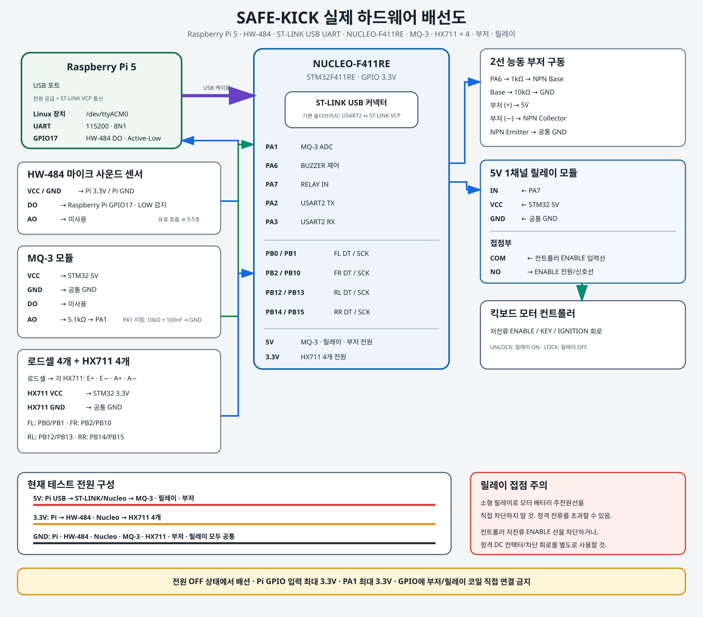

안전 점검과 구동을 연결한 세이프킥
센서·구동부 하드웨어와 STM32 펌웨어를 맡아, 상위 시스템의 판단을 실제 출력으로 연결했습니다.

나의 기여 · 센서와 구동부 펌웨어
4채널 하중 보정·MQ-3 수집·PWM·릴레이 제어를 구현했습니다. 회로·센서·모터를 구성하고 Raspberry Pi와 UART로 측정값·명령을 교환했습니다. 담당 구현 보기 →
팀 시스템 · 판단과 물리 출력을 분리
앱·서버가 사용자와 대여 정보를 관리하고, Raspberry Pi가 얼굴·헬멧·음주·탑승 상태를 판단합니다. STM32는 센서를 읽고 모터·릴레이·부저를 제어합니다. 앱·서버·AI는 팀원 구현 영역입니다.
연동 확인 · 점검 결과를 구동 조건에 반영
팀 시연에서 안전 점검과 구동 제어의 연결을 확인했습니다. MCU에는 정상 구동의 PWM 점진 변경과 LOCK 시 출력 차단을 별도 경로로 구현했습니다.
센서 수집부터 PWM·릴레이 제어까지
입력값 수집에 그치지 않고, UART 명령과 센서 상태에 따라 구동 허용·속도 변경·차단을 구현했습니다.


센서 드라이버와 UART 데이터
HX711의 24비트 값은 부호 확장 후 (원시값 − 영점) / scale로 채널별 환산했습니다. MQ-3의 12비트 ADC 원시값과 하중 정보를 USART2 115200-8-N-1로 전달해 상위 판단과 연결했습니다.
구동과 차단을 구분한 출력 제어
UNLOCK 직후 PWM 0%로 대기하고 기동 조건에서 30%를 적용했습니다. 정상 구동은 25 ms마다 1%p씩 변경하되, LOCK은 이 과정을 건너뛰고 PWM 0%·릴레이 OFF를 적용합니다. 출력 제어 코드 ↗
4점 하중 측정과 실물 배선
발판의 로드셀 4개와 HX711, 보드·배터리·L298N·DC 모터를 연결했습니다. 소프트웨어 상태가 부저 경고와 릴레이 차단으로 이어지도록 실물 장치를 통합했습니다.
센서 보정과 읽기 실패 시 구동 차단
채널별 편차는 보정하고, 불안정한 측정은 여러 표본으로 확인하며, 읽기 실패는 LOCK으로 처리했습니다.

01 · 채널별 오차는 영점·기준 추로 보정
문제 채널별 편차와 표시 중량 불일치가 있었습니다. 조치 무부하 10회 평균으로 영점을 저장하고, 기준 추로 scale을 다시 계산했습니다. 확인 재빌드 후 무부하와 기준 중량을 재확인했습니다. 영점·중량 환산 코드 ↗
02 · MQ-3 단일값 대신 기준·실측 표본 수집
문제 예열 상태와 baseline 변화가 판정에 영향을 줬습니다. 조치 기준값 8회와 실측값 8회를 500 ms 간격으로 수집해 Raspberry Pi가 여러 표본을 판단하도록 구성했습니다.
03 · 센서 무응답을 정상 운행으로 처리하지 않기
조치 HX711 읽기에 영점 보정 시 1초, 운행 중 200 ms의 대기 제한을 두고 실패 시 LOCK을 호출했습니다.대기 제한은 전체 차단 시간의 실측값이 아닙니다. MQ-3는 교정된 혈중알코올농도 측정기가 아닌 시제품 센서입니다.